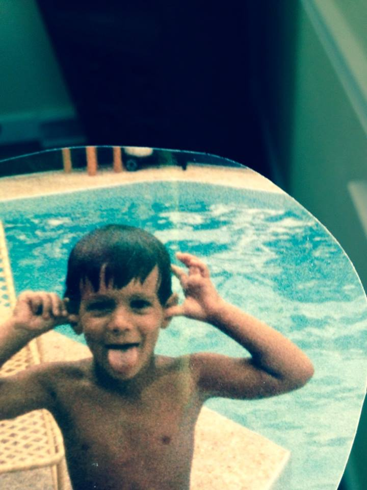

About Me

My name is Ted Sandridge. I am currently a Produce Manager at Harris Teeter in Carrboro, NC. I am studying to become a full time Web Developer.
I am extremely lucky to have a partner of 14 years named Amanda, and we have a beautiful boxer named Cosette. I love craft beers and consider myself a "foodie".I also am an avid European Football fan, being extremely dedicated to Manchester United. I also enjoy playing video games and getting together with friends to play some Table Top Games.